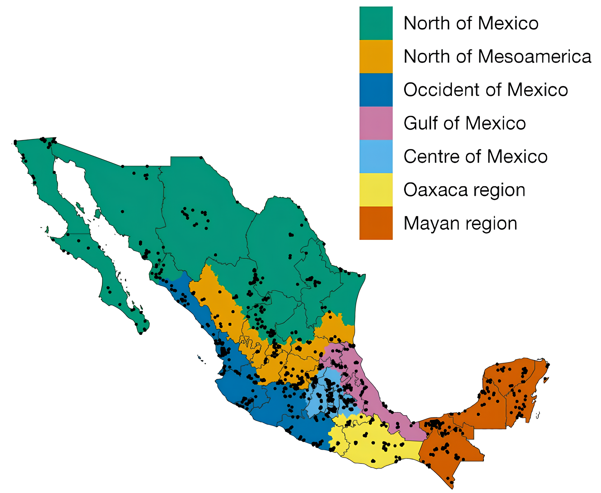

Geographic distribution and genomic diversity across the Mexican Biobank.
The genetic data generated and analyzed by the Mexican Biobank (MXB) Project are available through the European Genome-phenome Archive (EGA) under the study number: EGAS00001005797.
Access to the dataset is controlled to protect participant privacy and comply with ethical and legal requirements. Researchers interested in using the data should submit a data access request via the EGA platform, which will be evaluated by the Mexican Biobank Data Access Committee.
The analyses of the MXB data revealed complex patterns of genetic variation across Mexico shaped by diverse ancestral backgrounds. This highlights the importance of exploring clinically and biomedically relevant variants on a case-by-case basis.
MexVar is an interactive platform that allows users to explore SNPs annotated with GWASCatalog, ClinVar, PharmGKB, and OMIM. Powered by MXB data, MexVar provides a new way to visualize allele frequency data and correlate it to geography and ancestry variables.